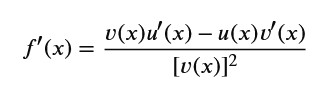
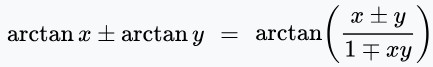

So, you want to study Computer Engineering?
So, you are going to a gymnasium high school (gimnazija, approximately
meaning grammar school), and you are thinking about pursuing a
Computer Engineering bachelor degree, in schools such as FERIT
(University of Osijek) or FER (University of Zagreb)? Let's not go into
whether it's financially and otherwise worth to do it, and let's focus
on the things that are good to know (mostly mathematical in nature) when
going through that degree, but which high-schools don't mention or they
barely mention:
-
Partial fractions (razdvajanje/rastav na parcijalne razlomke)
High-schools barely mention it, but it's useful for a few reasons:-
The derivatives of rational functions. You are
not supposed to
calculate the derivatives of complicated rational functions
using this formula:

, because good luck simplifying the denominator then (notice the square in the denominator). - The Laplace transforms. They are almost useless if you do not know the partial fractions.
-
The derivatives of rational functions. You are
not supposed to
calculate the derivatives of complicated rational functions
using this formula:
-
Polynomial division (dijeljenje polinoma)
Quite a few error-correcting algorithms you will be taught in your Information Theory classes and your Communications Networks classes are based on polynomial division. Allegedly it's easy to implement in the hardware, though I don't really understand how. And the deconvolution in the Signals and Systems is basically a polynomial division, and knowing that makes it trivial to use MatLab to do it for you when doing homework. It's not taught in gymnasia high-schools at all, yet you are expected to know it from somewhere. -
The formula for the differences of arcus tangents.
I am talking about this formula:
.
It comes useful in cybernetics. Namely, when doing the lead-and-lag compensation to synthesize a controller using the Bode plots (one of the types of the non-standard controllers), you will need to solve a system of equations with differences of arcus tangents of some angles. Using that formula, you can transform that system of equations into a simple quadratic equation. They will expect you to know how to solve such a system of equation from somewhere, even though you have never seen anything like that (and that formula is, if anything, barely mentioned). -
Know basic optics.
In Computer Engineering (more specifically Information Theory), we are often using the term red and blue to describe low-frequency and high-frequency things, respectively. If you know that red is low-frequency visible light and blue is high-frequency light, you will easily remember which is which. -
Forget what you've been taught in your high-school physics
classes about alternating current.
I can almost guarantee you you've misunderstood everything. Explaining alternating current to somebody who does not understand calculus probably cannot be done properly. Capacitors (kondenzatori) act as integrators, whereas solenoids (zavojnice) act as derivators. -
Know the basics of compiler theory.
I am not saying you need to know how to build a compiler. But understanding what the terms such as tokenizer, lexical analyzer, parser, semantic analyzer, code generator, optimizer, assembler and linker mean does wonders when you have to decypher the error messages given to you by the compiler you are using when your program does not compile or does not link. You can perhaps watch this video in the Latin language in which I explain the basics of the compiler theory (MP4). I am not saying knowing basic compiler theory will do miracles when it comes to writing in novel programming languages, it won't. VHDL is full of quirks such as that<=can be both an operator meaning less-than-or-equal-to (so, a left-associative operator) and a signals assignment operator (so, a right-associative operator), and it's difficult to think of how that might be parsed. But when an error inevitably happens, knowing basic compiler theory often helps you decypher the error message. -
Pay attention to the grammar of the future tenses in your English
classes!
Your English professor on the university will insist on them. Do you know how to translate the sentence "Test će početi u devet sati i neće završiti prije jedanaest sati." into English? The correct answer is: "The test starts at 9 AM and it will not have ended by 11 AM.", and that "will not have ended" is called the future perfect tense. I left that question in the written exam from English 3 blank. The Kajkavian dialect of Croatian has the future perfect tense, so, if you happen to speak it, you will probably have an easier time understanding English syntax. I honestly don't know what's the right way to study those things and get a good mark in your English classes. Studying historical linguistics on the side, like I was doing, does not seem to help.